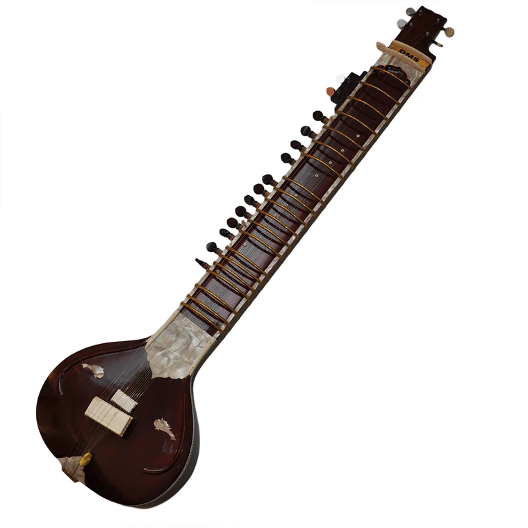

Ситар
Ситар — это один из самых характерных и узнаваемых инструментов индийской классической музыки. Его пронзительные звуки и уникальная форма делают его не только отличным музыкальным инструментом, но и символом богатой индийской музыкальной традиции.
Ситар имеет сложную конструкцию с длинным грифом и большим числом струн, из которых лишь несколько используются для игры непосредственно, в то время как остальные служат для создания богатого резонанса. Верхняя дека инструмента украшена резными узорами, что придает ему характерный внешний вид.
Игра на ситаре — это искусство, требующее не только виртуозной техники, но и глубокого понимания индийской раги и тала. Музыканты используют специфические техники, такие как меззо-стиляж, слайдинг и вибрато, чтобы создать узнаваемый звук ситара.
Ситар часто используется в сольных выступлениях, а также в сопровождении вокала и других инструментов в индийской музыке. Его влияние распространяется далеко за пределы Индии, внеся значительный вклад в мировую музыкальную культуру.